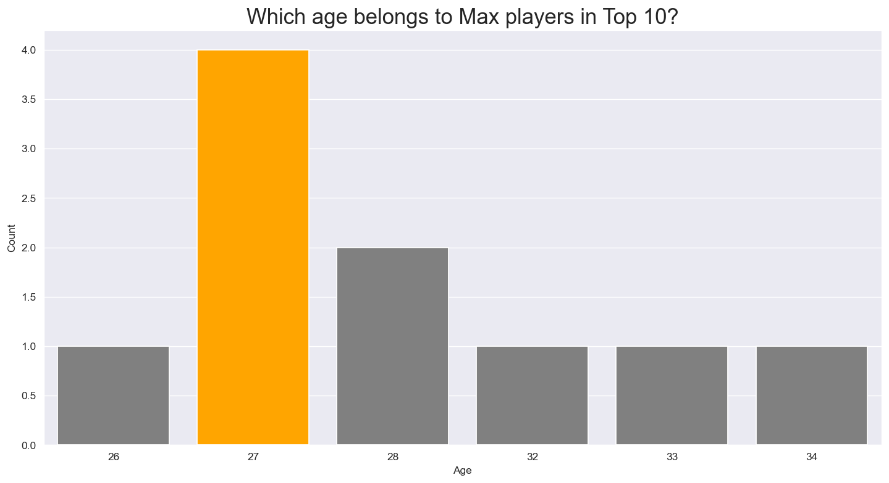
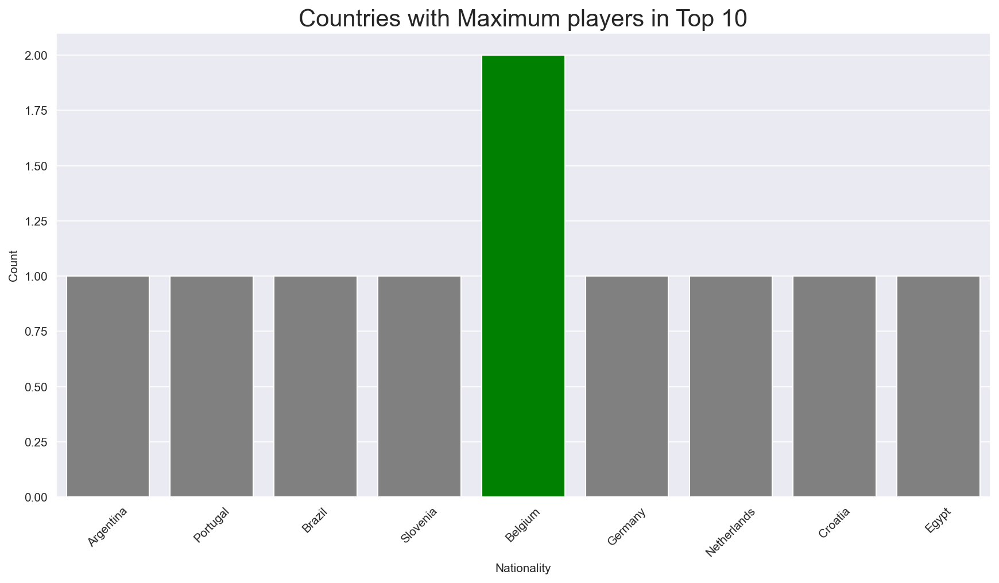

This project deals with the dataset from FIFA-20 Video Game to perform various Data Anaysis Operations such as Data Wrangling & Exploratory Data Analysis.
Football is arguably the most popular sport in the world and FIFA is the most popular Football (soccer) simulation game by Electronic Arts (EA Sports).
This project deals with the dataset from FIFA-20 Video Game to perform various Data Anaysis Operations such as Data Wrangling & Exploratory Data Analysis.
The Dataset includes the players data for the Career Mode from FIFA 15 to FIFA 20: players_20.csv. The data allows multiple comparisons of the same players across the last 6 versions of the video game.
├── data
│ └── players_20.csv
├── report
│ ├── FIFA20-Presentation.pptx
│ └── FIFA20-Report.pdf
├── src
│ ├── FIFA-20-Analysis.ipynb
│ └── players_20.csv
├── .gitignore
└── README.md
Plots & Visualisations
Determining the age of top 10 players:

Countries that produced the top talent:

Task 1: We have created a Data Analysis Report on the Data.
Task 2: We have analysed Player Skills: Messi vs Ronaldo
Task 3: Answered EDA questions as below:
1: Belgium had most players (i.e. 2) in top 10
2: After age 32, the Overall Rating does not seem to increase anymore. General range for improvement in Overall Rating is 16 to 27 for most players.
3: The Right Wingers dominate the overall Maximum and Median Wage.
FIFA 20 dataset provides a great opportunity to gather insights for various Football Teams, Clubs and Top Rated Players. We have performed Data Analysis & Visualisation on top performing 10 Players and collected insights for various Ages and Salaries for the players.
Various Clustering Methods can be applied on the dataset in order to cluster players together with similar abilities, skills etc.